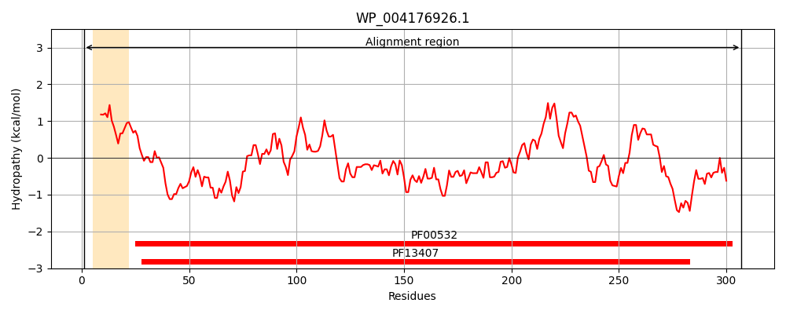
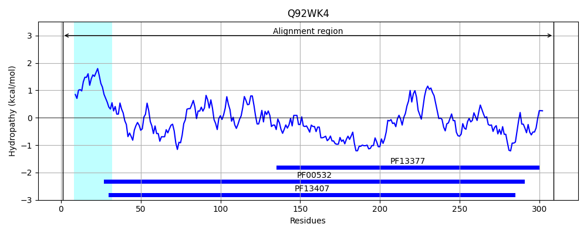
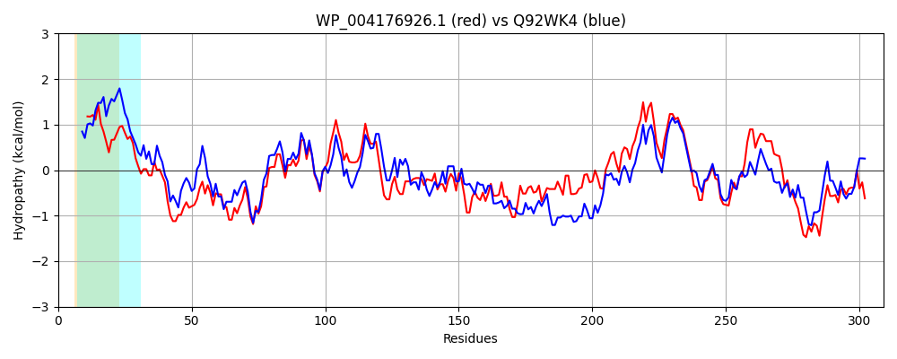

Hit Accession: Q92WK4
Hit TCID: 3.A.1.2.11
Hit Description: gnl|BL_ORD_ID|17249 gnl|TC-DB|Q92WK4|3.A.1.2.11 Probable ABC transporter sugar-binding protein - Rhizobium meliloti (Sinorhizobium meliloti).
Mach Len: 309
e:0.000000
Query TMS Count : 1
Hit TMS Count: 1
TMS-Overlap Score: 0.750000
Predicted Substrates:CHEBI:4840;erythritol
BLAST Alignment:
Score: 701 , Bit scores: 274 bits, E-value: 1.5e-91, Alignment length: 309, Percentage identity: 49
Query: 1 MKL--RITLLTAATLTAFSFAAHAAEKGTIMIMVNSLDNPYYASEAKGASEKAQALGYKTTVLSHGEDVKKQNELIDTAIGKKVQGIILDNADSTASVAAIEKAKKAGIPVVLINREIPVDDVALEQITHNNFQAGSEVANVFVEKMAEKGKYAELTCNLADNNCVTRSKSFHQVIDQYPDMVSVAKQDAKGTLIDGKRIMDSILQAHPDVKGVICGNGPVALGAIAALKAANRSDVIVVGIDGSNDERDAVKAGTLQATVMLQAQAIAAQGVTDLDNYLQKGEKPAKQRVMFRGILITQDNADKVQDF 307
MKL R+T+ A + A S A A I I+ S DNP++ +EA GA KA+ LGY+T VL H +D KQ++LIDTAIG+ + IILDNA S AS+AA++KAK AG+P LI+REI VA+ QI NN+Q A FV+ M E G Y EL AD N RSK +H VID+YP+M VA+Q A + +G M++ILQA+PD+KGVI GN +A+GAIAAL+AA R DVIVVG DGSND RD++K+G ++ATV+ A A A V Y+ G+ PA+++ + +LI +NAD+++ F
Sbjct: 1 MKLTRRMTITAFAAVLAASSAVPAYAADLIAIITPSHDNPFFKAEAVGAEAKAKELGYETLVLVHDDDANKQSQLIDTAIGRGAKAIILDNAGSEASIAAVQKAKDAGVPSFLIDREINATGVAVSQIVSNNYQGAQLGAEEFVKLMGESGNYVELLGREADLNAGIRSKGYHDVIDEYPEMKMVAQQSANWSQTEGYSKMETILQANPDIKGVISGNDTMAMGAIAALQAAGRKDVIVVGFDGSNDVRDSIKSGGIKATVLQPAYAQAQMAVQQAHEYITTGKAPAEEKQLMDCVLINSENADQLETF 309 | Protein Hydropathy Plots: |
|---|
|  |  |
Pairwise Alignment-Hydropathy Plot:
|
|---|
|  |